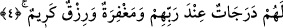

GERÇEK MÜ’MİNLERİN
ÖZELLİKLERİ
2. Müminler ancak o kimselerdir ki, Allah anıldığı zaman yürekleri ürperir, O’nun
âyetleri kendilerine okunduğu zaman imanlarını artırır ve sadece Rab’lerine
tevekkül ederler.
3. Onlar namazlarını dosdoğru kılan ve kendilerine rızık olarak verdiklerimizden
(Allah yolunda) harcayan kimselerdir.
4. İşte onlar gerçek müminlerdir. Onlar için Rab’leri katında nice dereceler,
bağışlanma ve tükenmez bir rızık vardır.
İmanda kemale ermiş onda samîmî olan “Müminler ancak o kimselerdir ki,”
yanlarında “Allah anıldığı zaman” O’nun celâlinin heybetinden ve ebedî olan
Mevlânın büyüklüğünü düşünerek “yürekleri ürperir.” Bu korku, kâmil iman sahibi
kimselerin vazgeçilmez vasıflarından biridir. Bu kâmil iman sahibi kimsenin, Cenab-ı
Hakk’a yakın bir melek veya bir peygamber yahut muttaki bir mümin olması arasında
fark yoktur. Fakat azabdan korkmak böyle değildir. Çünkü azabdan korkmak, sadece
Allah’ın zikriyle hasıl olmaz. Bilakis bu korku, işlenen günahı düşünmekle ve intikam
almak üzere Allah’ın âsîlere nasıl azab ettiğini hatırlamakla da meydana gelir.
Kimisi vardır günah işlemeye niyetlenip kendisine ‘Allah’dan kork.’ denilince
Allah’ın azabı korkusuyla ondan vazgeçer. Kimisi de vadır ki kendisini günahtan
sakındıracak, Allah’ın fiil ve sıfatlarından bir şey hatırlatılmadan sırf O’nu zikredip
anarak, O’nun celâl ve azametini düşünerek günahtan yüz çevirir. İşte bununla önceki
kimse bir değildir.
Bilesin ki îmanın nuru kalbi inceltir, onu nefsin kir ve karanlıklarından temizler.
Böylece kalbin kasveti azalır ve Allah’ı zikre yumuşar. İçinde Allah’a karşı bir şevk
uyanır. Bu, yolun başında; bidâyet hâlinde olanların halidir. Yolun sonuna; nihâyete
ulaşanların hali ise zikirle sürekli bir sükûnet ve huzur kıvamında bulunmaktır. Nitekim
İslâm’a henüz yeni girmiş bir grup insan geldi. Kur’an’ı dinledikleri zaman ağlıyorlar,
ah vah ediyorlardı. Ebû Bekir (r.a.) onlara: “Biz de İslâm’a ilk girdiğimizde böyleydik,
sonra kalblerimiz katılaştı.” demiştir. O, bu sözüyle huzur ve itmînan halinin son
mertebesinde olduğuna işaret etmektedir.